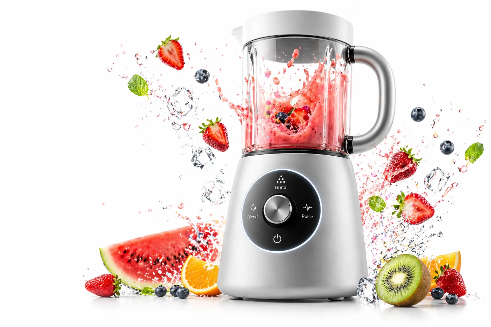
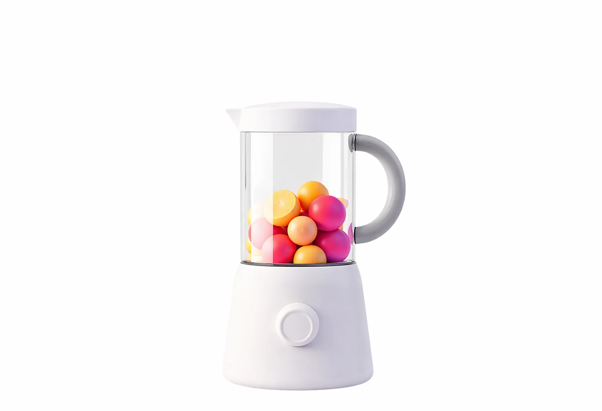
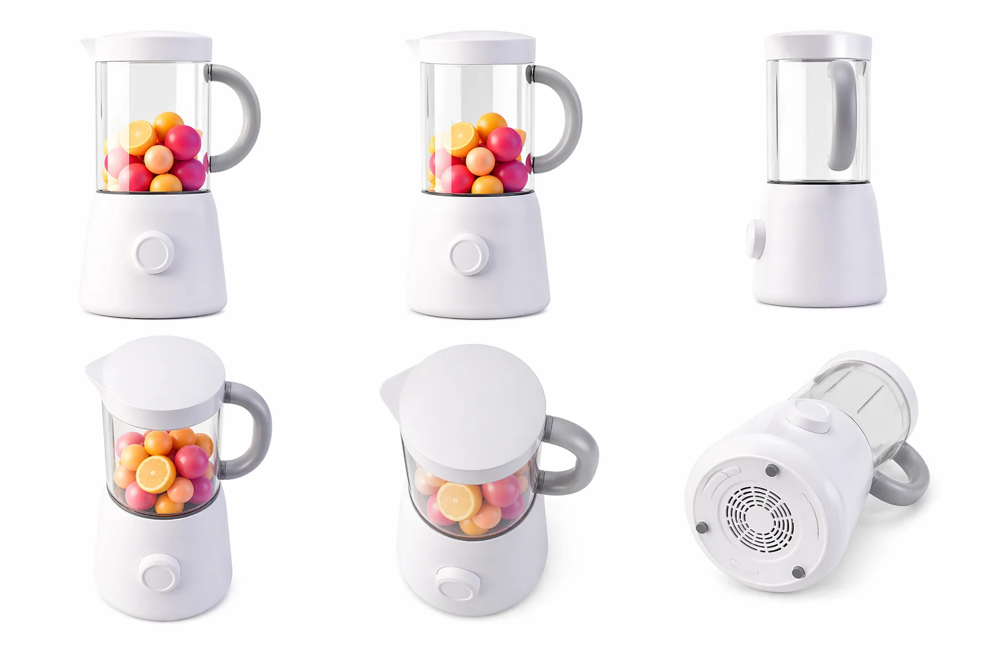
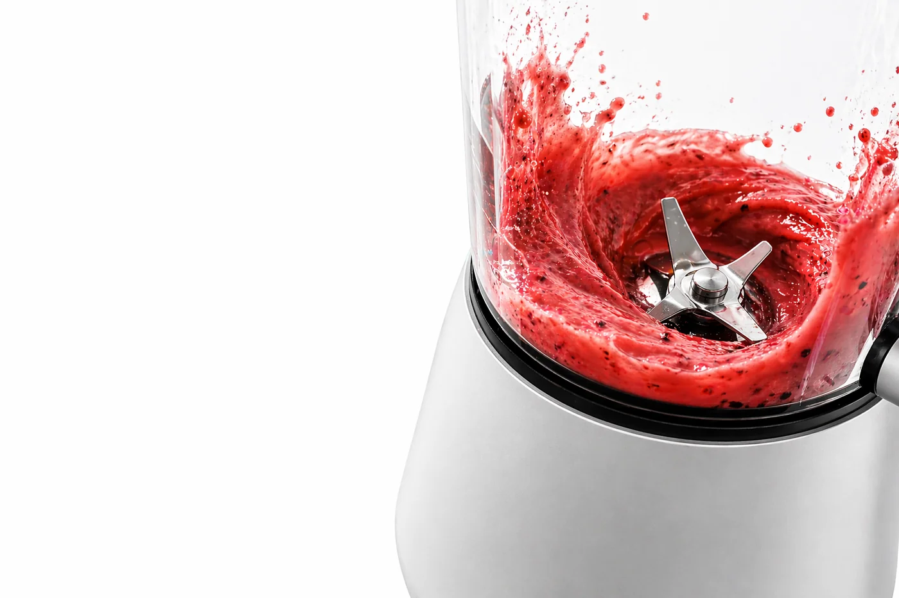
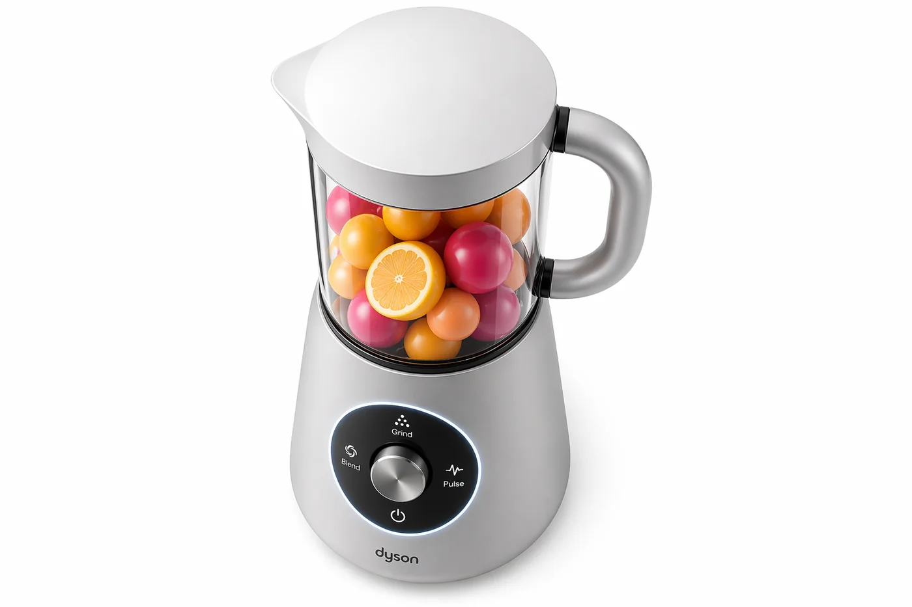
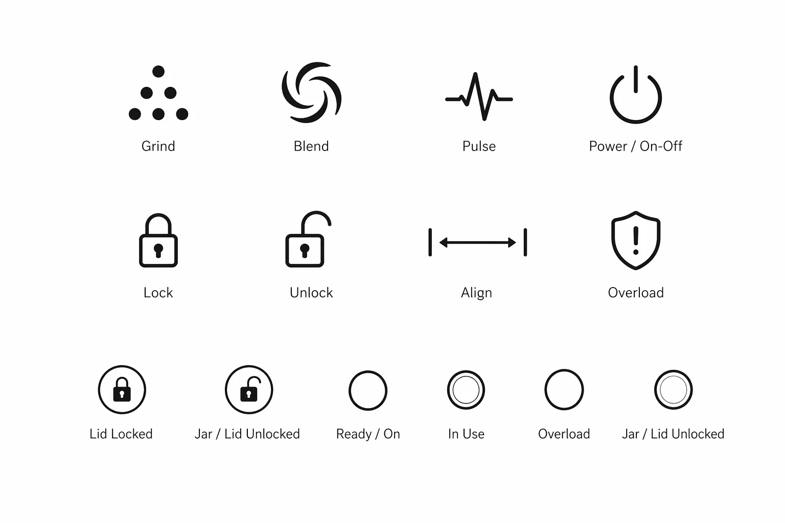
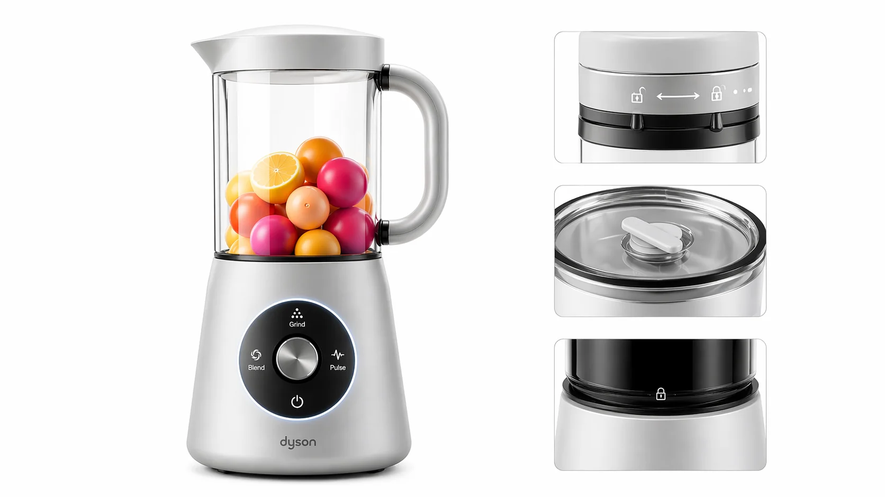
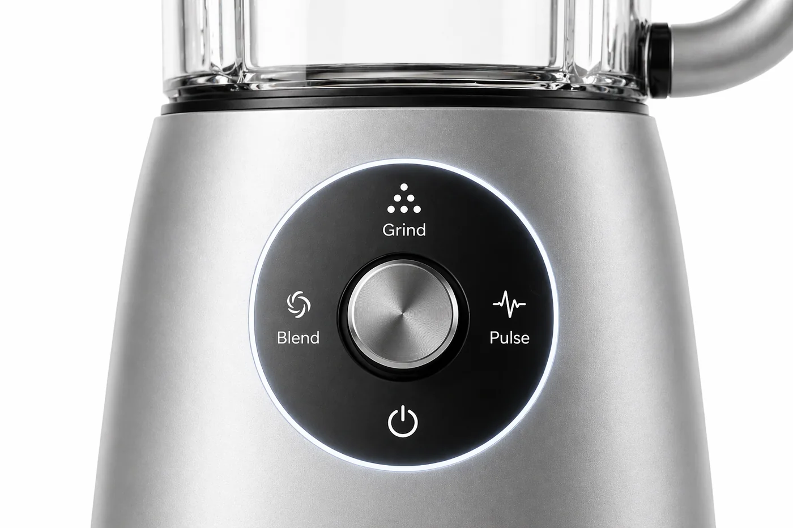
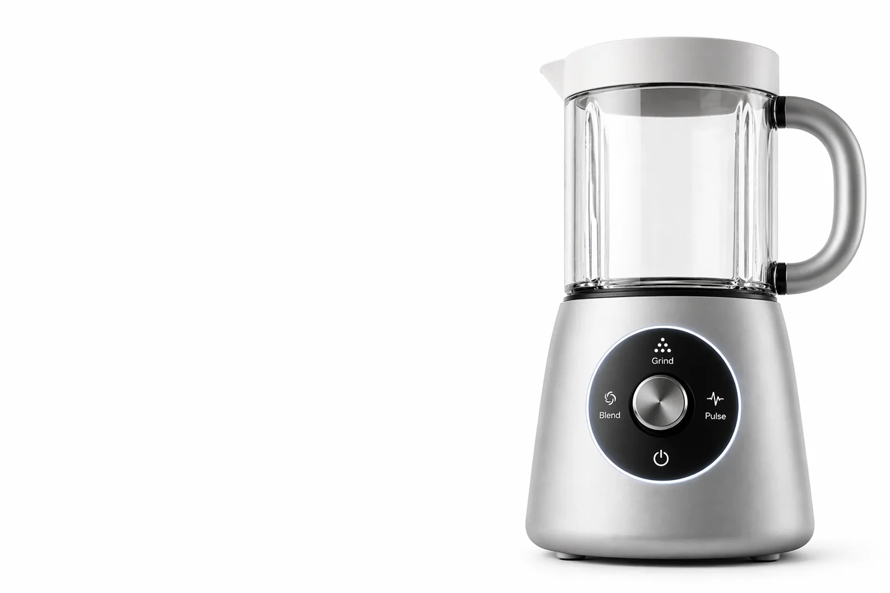

Mixer Grinder Redesign
Applying HCI principles and Nielsen’s heuristics to an everyday kitchen appliance.

The problem
A typical mixer grinder relies on memory: numbered speeds, no feedback and a confusing jar lock. That leads to mistakes, and sometimes to safety risks.
The solution
A recognition-based control panel: icons for Grind, Blend and Pulse, an LED status ring, a guided lock, and an interlock that stops the motor if the jar or lid isn’t secure.
What I did
Interface breakdown, a heuristic evaluation of 10 issues with severity ratings, an icon system, and a redesigned control panel and safety system.
Objective
The goal was to evaluate and redesign a mixer grinder interface using HCI principles and Nielsen’s usability heuristics, improving usability, safety and overall experience.

I chose a standard mixer grinder found in most Indian households. Its interface is a lid closure, a jar placement and locking system, a rotary speed knob (0–1–2–3) and a pulse function. There are numbers on the knob, no feedback indicators, and an unclear locking mechanism.
Key usability problems

- No clear system status
- Confusing speed controls
- No feedback during operation
- Heavy reliance on user memory
- Poor error prevention
Evaluation & redesign mapping
| # | Issue | Heuristic violated | Severity | Why it matters | Proposed fix |
|---|---|---|---|---|---|
| 1 | No clear ON/OFF indication | Visibility of system status | 3 | User unsure if the machine is active, a safety risk | LED ring around the knob |
| 2 | Speed levels (1–2–3) are unclear | Match with the real world | 4 | Users don’t know which speed to use, so they guess | Icons: grind, blend, pulse |
| 3 | No proper pulse control | User control & freedom | 3 | Hard to control short bursts, food gets over-processed | Separate press-and-hold pulse button |
| 4 | Jar alignment is confusing | Recognition vs recall | 4 | Users struggle every time | Arrows and guided grooves |
| 5 | No confirmation when the jar is locked | Visibility of system status | 4 | Can lead to unsafe operation | “Click” feedback and lock indicator |
| 6 | Machine runs even if the lid isn’t secure | Error prevention | 4 | High risk: spills and injury | Lid and jar interlock |
| 7 | No feedback for overload | Help users recognise errors | 3 | User thinks the product is broken | Red overload indicator |
| 8 | Inconsistent lock direction across products | Consistency & standards | 2 | Confusing when switching products | Standard lock direction and icons |
| 9 | Cluttered labels and branding | Aesthetic & minimal design | 2 | Reduces clarity of controls | Minimal front panel |
| 10 | Users must remember usage patterns | Recognition vs recall | 3 | Increases cognitive load | Visual labels and usage hints |
Four of the ten issues were critical, and three of those were about safety.
Key insight
The current interface relies on memory and past experience. The redesign shifts it to recognition, feedback and error prevention.

The new interface



LED status ring
The ring around the dial tells the user what the machine is doing at a glance, with no memory needed.
Ready / on
In use
Overload
Jar or lid unlocked

Before vs after
Before
- Numbers (1–2–3)
- No feedback
- Confusing locking
- Error-prone
After
- Icons (grind, blend, pulse)
- LED status indicator
- Guided alignment
- Error prevention system

The redesign turns an experience-dependent product into a user-centred one by putting visibility, feedback and error prevention first. Moving from recall to recognition lowers cognitive load and makes the appliance safer and easier to use. It shows how HCI principles can improve even simple household products.